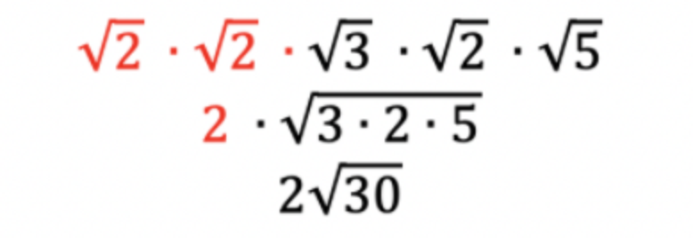
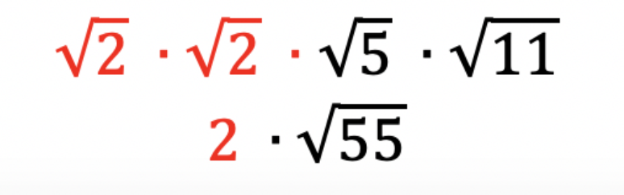
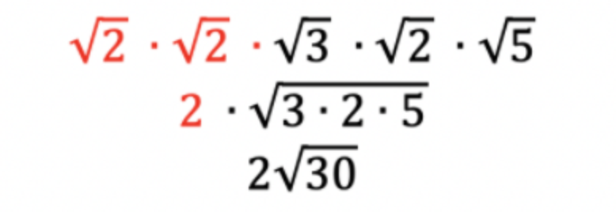
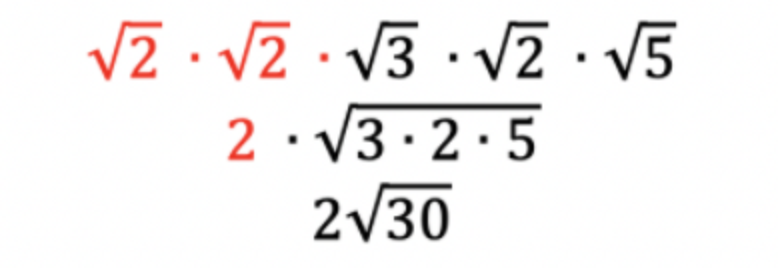

Sometimes it is necessary to simplify a square root without using a calculator. We call this simplifying a square root by hand. To simplify a square root by hand there are two steps.
Factor the radicand (the number under the square root sign) by using a factor tree.
Then look for repeating pairs of square roots in order to simplify the expression.
Rule: The square root of any number, squared, equals the radicand.
Look for pairs of square roots to simplify using the formula: √a ∙ √a = a.
For example:
This pattern exists for all numbers.
Example: Simplify √40
Step 1: Use a factor tree to simplify the radicand.
Step 2: Re-write the radicand as the product of all its factors from your factor tree. Look for pairs of square roots and use the rule above to simplify as far as you can.
Notice the similarity between a factor tree and simplifying square roots. Each time you simplify a square root you will need to utilize the factor tree to make life easier. For every pair of factors, simplify. Combine all remaining numbers by multiplication and this value will be the new radicand.
Example: Simplify √120
Step 1: Use a factor tree to simplify the radicand.
Step 2: Re-write the radicand as the product of all its factors from your factor tree. Look for pairs of square roots and use the rule to simplify as far as you can.

Example: Simplify √85
Example: Simplify √220

Example: Simplify √90
Let's try a few problems on your own. Then check your answer to see if you got it right.

 Step 2: Re-write the radicand as the product of all its factors from your factor tree. Look for pairs of square roots and use the rule to simplify as far as you can.

Step 2: Re-write the radicand as the product of all its factors from your factor tree. Look for pairs of square roots and use the rule to simplify as far as you can.
